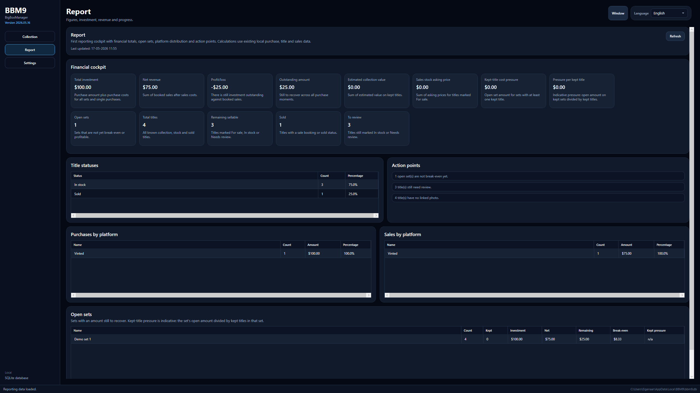
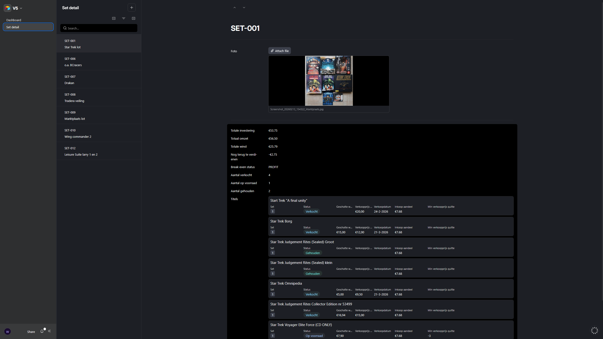
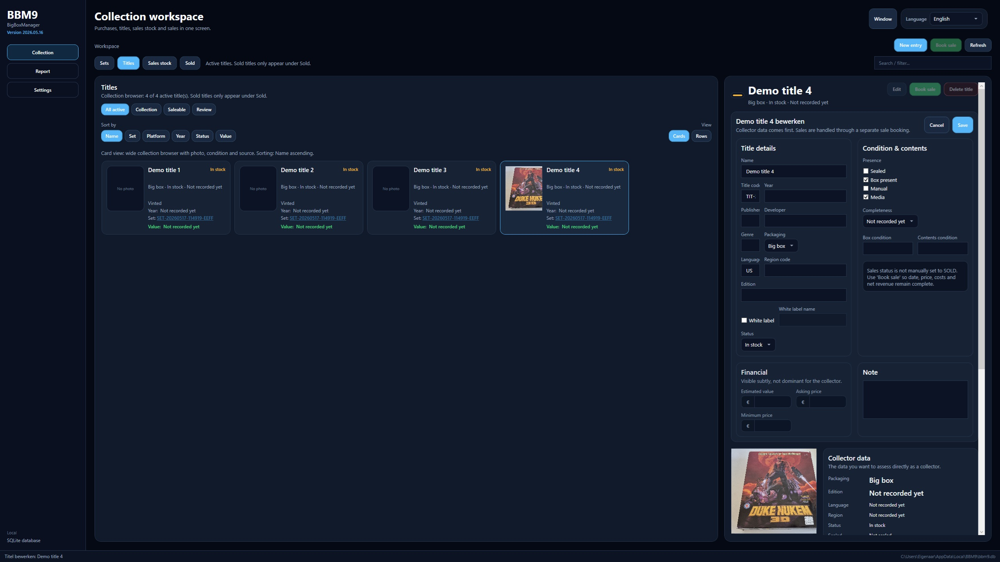

Setbeheer
Sets aanmaken en bijhouden met aankoopinformatie, kosten en notities.
Persoonlijk hobbyproject
Ten behoeve van mijn hobby heb ik deze app gemaakt. BigBoxManager is een lokale Windows desktop app in C# met WPF en SQLite, bedoeld om sets, titels, inkoop en verkoop van retro PC big box games overzichtelijk bij te houden.
Overzicht
Ik verzamel en verkoop zo nu en dan retro PC big box games. Daarbij merkte ik dat algemene tools niet echt goed aansloten op wat ik wilde bijhouden. Daarom ben ik begonnen met een eigen lokale app, gericht op mijn eigen workflow en interesses.
Functies
Sets aanmaken en bijhouden met aankoopinformatie, kosten en notities.
Titels koppelen aan sets en details opslaan zoals taal, compleetheid en conditie.
Alle data wordt lokaal opgeslagen in SQLite. Geen cloud en geen online account nodig.
Beter overzicht krijgen van investering, voorraad en opbrengst.
Screenshots



Feedback
Heb je een idee voor een functie of zie je iets dat handiger kan, dan hoor ik het graag. Je kunt een issue aanmaken op GitHub of een bericht sturen.
Ideeën voor later
Een kleine lijst met geplande functies of ideeën waar ik nog aan wil werken.
Een simpel overzicht van wat er per versie is toegevoegd of aangepast.
Een klein persoonlijk stukje over verzamelen, hobby en waarom deze app bestaat.